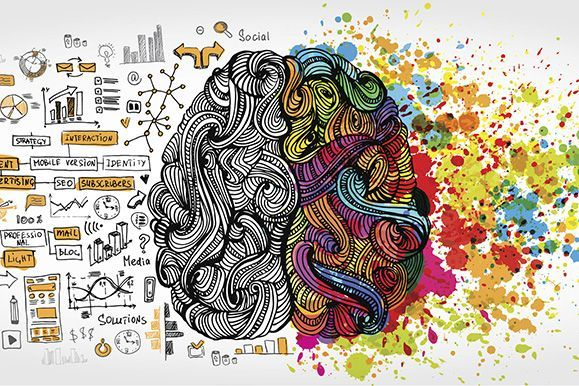

JavaScript BASICS
Sprint 3 Technical Blog
26 February 2020
In this blog entry we will try to simplify things as if talking to a non-technical person so that they can understand the basics of JavaSript, and how it relate to HTML and CSS.
Also we will describe what is Document Object Model or DOM and will site some examples.

EMOTIONAL INTELLIGENCE
Sprint 3 Cultural Blog
18 February 2020
Understanding the importance of Emotional Intelligence and how it differs from IQ.

MARGIN vs BORDER vs PADDING
Sprint 2 Technical Blog
16 February 2020
Knowing the differences between Margins, Borders and Paddings can help improve your CSS knowledge to be a better designer.

LEARNING REFLECTIONS
Sprint 2 Cultural Blog
15 February 2020
Reflecting on my learning journey here at EDA and how I plan on achieving my goals.

THE STORY OF TE HOUTAEWA
Sprint 1 Technical Blog
14 February 2020
"E kore e mau i a koe, he wae kai pakiaka."
A foot accustomed to running over roots makes the speediest runner.

IDENTITY, VALUES AND STRENGTHS EXPLORATION
Sprint 1 Cultural Blog
09 February 2020
"Cultural identities are influenced by several different factors such as ones religion, ancestry, skin colour, language, class, education, profession, skill, family and political attitudes. These factors contribute to the development of one's identity." - Wikipedia